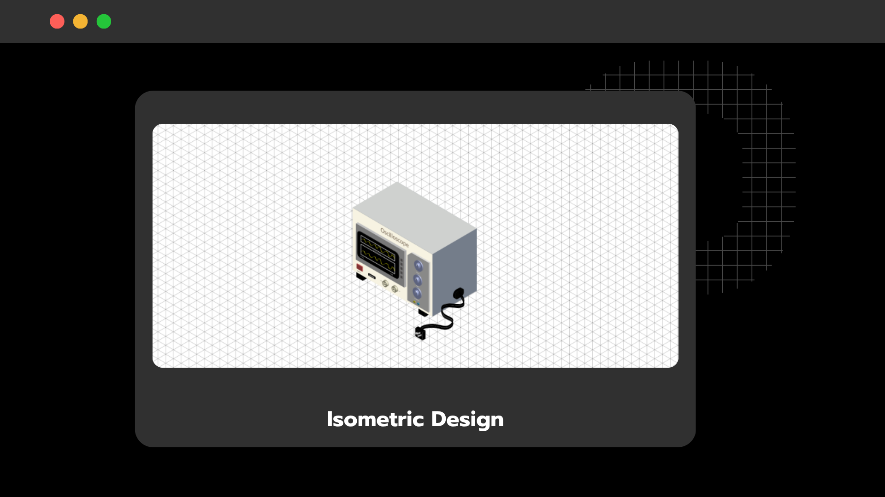

This is an Isometric 3D design of an oscilloscope, created using Adobe Illustrator (AI). The Isometric perspective allows the depiction of the object from a 30-degree angle, providing a clear view of both the front and side of the oscilloscope simultaneously.
